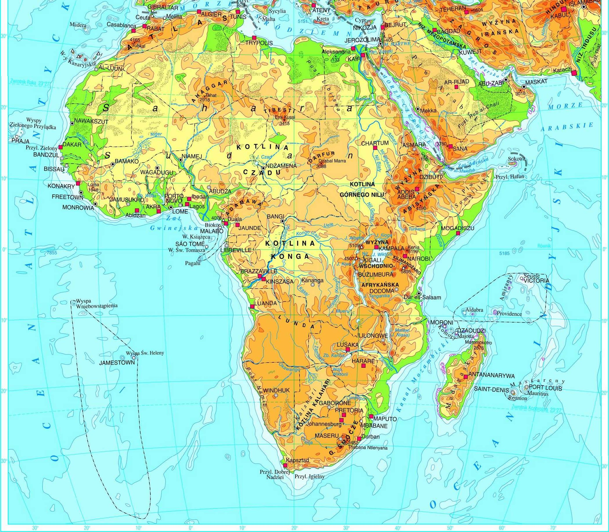
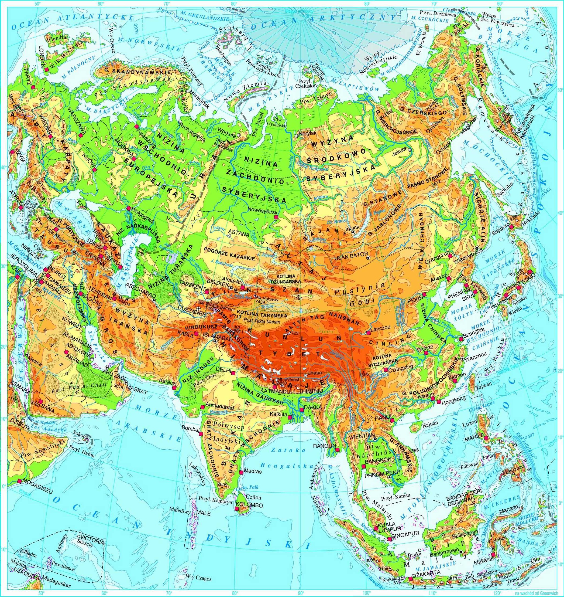
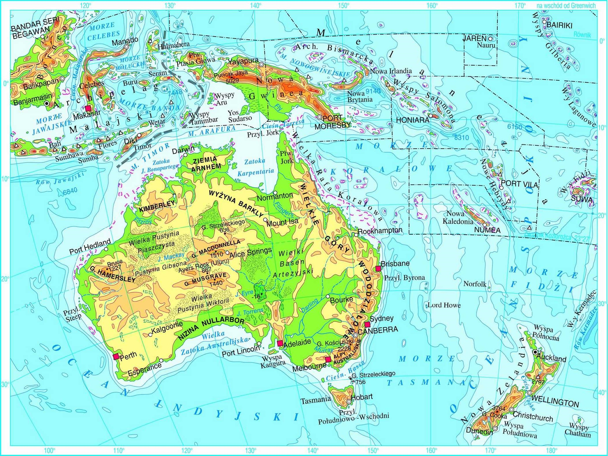

Podróż dookoła świata!
Wybieramy się na podróż dookoła świata
Przewodnikiem będzie: Kamil aka KLOP
Zwiedzamy Afrykę
Powierzchnia Afryki: 30,4 mln km2 (druga największa)
Liczba ludności kontynentu: 1,22 mld (2017 – druga największa)
Średnia wysokość: 657 m.n.p.m.
Najwyższy szczyt: Kilimandżaro (szczyt Uhuru na wulkanie Kibo): 5895 m.n.p.m.
Najniższy punkt: Jezioro Asal (~-155 m.n.p.m.)
Jedziemy do Azji
Powierzchnia Azji: 44,6 mln km2 (największa)
Liczba ludności kontynentu: 4,44 mld (2018 – największa)
Średnia wysokość: 987 m.n.p.m.
Najwyższy szczyt: Mount Everest (Czomolungma):8848 m.n.p.m.
Najniższy punkt: Morze Martwe (~-430 m.n.p.m.)
Płyniemy do Australii
Powierzchnia: Niecałe 7,7 mln km²
Liczba ludności: ~25 milionów osób
Średnia wysokość: 292 m.n.p.m.
Najwyższy szczyt: Góra Kościuszki 2228-2230 m.n.p.m.
Najniższy punkt: Dno jeziora Eyre (~-12 m.n.p.m. lub -15 m.n.p.m. według różnych źródeł)
Teraz odwiedzamy Amerykę Południową

Powierzchnia: 17,8 mln km²
Liczba ludności kontynentu: 421 mln
Średnia wysokość: 655 m.n.p.m.
Najwyższy szczyt: Aconcagua: 6960 m.n.p.m.
Najniższy punkt: Laguna del Carbón (a dokładniej Gran Bajo de San Julián) (~-105 m.n.p.m.)
Wracamy do Europy

Powierzchnia: 10 523 000 km²
Liczba ludności kontynentu: 746 miliony
Średnia wysokość: 292 m n.p.m.
Najwyższy szczyt: Mont Blanc (4811 m n.p.m.)
Najniższy punkt: Nizinia Nadkaspijska (28 m p.p.m.)
| Kontynent | Położenie | Powierzchnia |
|---|---|---|
| Afryka | świat | ileśtam km |
| Azja | świat | ileśtam km |
| Australia | szur | bur |
| Ameryka pó i po | świat1 | 69km2 |
| świat2 | 2137km2 |
- Europa
- Polska
- Francja
- Azja
-
Rosja
- Moskwa
- Petersburg
-
Chiny
- Pekin
- Wuhan
-
Rosja
- Afryka
- Australia
- Ameryka północna
- Ameryka południowa
- Kontynent
- Wielki obszar otoczony morzami i oceanami
- Państwo
- Forma organizacji społeczeństwa